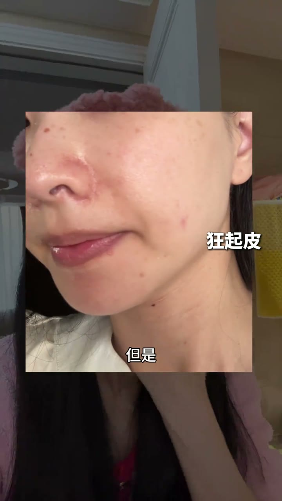
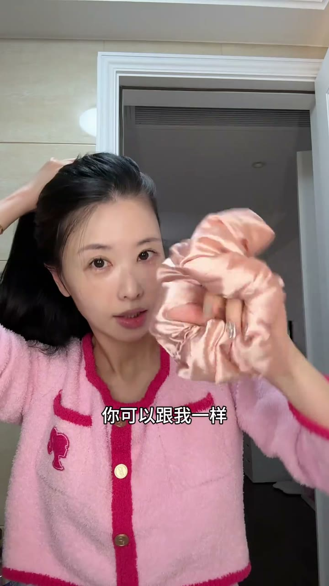
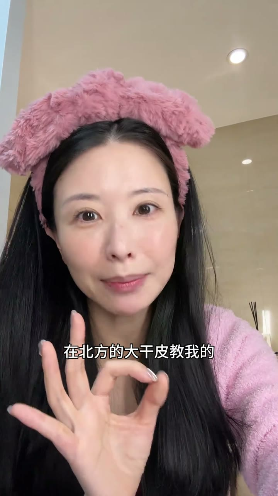

我剛護完膚突然想到來錄一下
我剛護完膚突然想到來錄一下

我發現不按常理護膚反而會變美

讓臉在短期恢復在這種滑滑嫩嫩透白發亮的狀態

讓臉在短期恢復在這種滑滑嫩嫩透白發亮的狀態
有點反常識反直覺但是很管用
尤其冬天在暖氣房裡面會腫成紅豆餅發紅發燙

尤其冬天在暖氣房裡面會腫成紅豆餅發紅發燙

你看我甚至會像起水泡一樣長小疹子

但現在你看我剛做完

是不是人模人樣多了

是不是人模人樣多了
第一個是大白教我的
只要在家素顏就能做
不要洗臉啊

只要有控就往臉上捆眼霜

只要有控就塗
只要有控就塗

它相當於往臉上一層一層的蓋羽絨背
幫腳趾鎖入水
你們有沒有覺得今年特別乾

但是用了這個方法之後
但是用了這個方法之後
我的臉就會從暗淡無光到

嗯

這樣光潤發亮

就像是從發配凝膚塔到西非回宮一樣
就像是從發配凝膚塔到西非回宮一樣

不用用貴的

就一百多把保濕做足的就可以

超級適合反覆跌脫

想要快速變美密集護理的話
想要快速變美密集護理的話
是不是都跟你講說睡前敷面膜

第二個反常識的方法來了

睡前後敷面霜

這樣敷到換不出膚色

這樣敷到換不出膚色
你可以以清新按摩到吸收
懶的話也可以跟我一樣玩手機

等十分鐘它完全吸收

等十分鐘它完全吸收
會變成這種透明的狀態
然後你就可以去睡了

為了防止頭髮黏臉上

你可以跟我一樣用真思髮圈
把頭髮全頂腦袋上

把頭髮全頂腦袋上

第二天起來就等著臉變成一百瓦的凳套

一樣發光發亮吧
第三個方法是在北方的大乾皮教我的

第三個方法是在北方的大乾皮教我的

對 今天方法都不適合油皮豆皮哈

你們在冬天比在夏天快過

這方法就是先塗乳液
再塗面霜
再塗面霜

或者先塗一個薄的面霜

再塗一個厚的面霜

相當於在大衣裡面穿一層薄的羽絨服

相當於在大衣裡面穿一層薄的羽絨服
哎一下子又體面又包暖

我們傳統會以為說乳液面霜選一個
或者紙圖一個面霜就好了
但是現在是特殊時期

我們要變靜態系的老公

要變弱

那你試試塗兩個面霜
絕了

絕了
不是這個噴噴霜和白沙布

你就體感一下

哪個輕軟的就先塗厚重的來封層
不需要很貴的
今天的方法裡面都沒有貴的
今天的方法裡面都沒有貴的

是讓你用手頭現有的
只是改變的方法就讓你換染一行

你要是拿不準手頭有什麼東西可以用的話

你要是拿不準手頭有什麼東西可以用的話